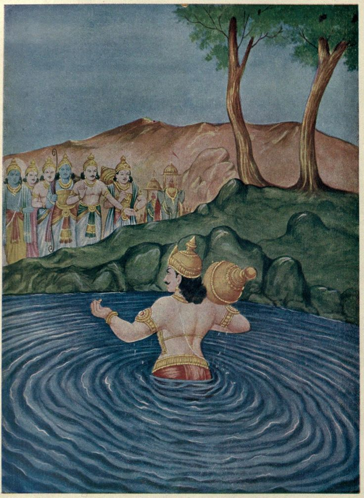

📖 अध्याय 2: सभा पर्व
सभा पर्व महाभारत का दूसरा प्रमुख अध्याय है जिसमें युधिष्ठिर के राजसूय यज्ञ, माया सभा का निर्माण, दुर्योधन का अपमान, जुए का षड्यंत्र और द्रौपदी के चीरहरण की घटनाएं वर्णित हैं। यह पर्व धर्म और अधर्म की सीमा रेखा स्पष्ट करता है।
🔹 मुख्य विषय:
- हस्तिनापुर का बँटवारा,राजसूय यज्ञ और युधिष्ठिर का राज्याभिषेक
- मयदानव द्वारा माया सभा का निर्माण
- दुर्योधन की जलसभा में भ्रांति और अपमान
- शकुनि के द्वारा पांडवों को जुए में हराना
- युधिष्ठिर का राज्य, भाई और द्रौपदी को हारना
- द्रौपदी का चीरहरण और श्रीकृष्ण का चमत्कार
- वनवास और अज्ञातवास की शर्त
हस्तिनापुर का बँटवारा

महाभारत के अनुसार, हस्तिनापुर का बँटवारा (राज्य का विभाजन) उस समय हुआ जब पांडवों को लाक्षागृह की घटना के बाद मृत मान लिया गया था, और फिर वे स्वयं द्रौपदी स्वयंवर से विजयी होकर लौटे। तब हस्तिनापुर की जनता को यह ज्ञात हुआ कि पांडव जीवित हैं।
📜 पृष्ठभूमि – हस्तिनापुर में सत्ता-संघर्ष
जब राजा पांडु वन में तपस्या के लिए गए और वहीं मृत्यु को प्राप्त हुए, तब हस्तिनापुर की गद्दी पर धृतराष्ट्र राजा बने। युधिष्ठिर, जो पांडु के ज्येष्ठ पुत्र थे, कानूनन राजा बनने के अधिकारी थे। लेकिन धृतराष्ट्र ने अस्थायी रूप से गद्दी संभालने के बाद उसे स्थायी बना लिया।
धीरे-धीरे युधिष्ठिर की प्रसिद्धि बढ़ने लगी, और प्रजा भी पांडवों को पसंद करने लगी। दुर्योधन और शकुनि को यह सहन नहीं हुआ। उन्होंने षड्यंत्र रचा और लाक्षागृह में उन्हें जीवित जलाने का प्रयास किया।
लाक्षागृह और पांडवों का वनवास
पांडवों ने विदुर की सहायता से वहाँ से भागकर वनवास लिया और स्वयं को मृत घोषित करवा दिया। कुछ वर्षों तक वे ब्राह्मणों का जीवन जीते रहे, फिर द्रौपदी स्वयंवर में भाग लिया।
द्रौपदी स्वयंवर के बाद स्थिति बदली
जब पांडव द्रौपदी को साथ लेकर लौटे और पता चला कि वे जीवित हैं, तो हस्तिनापुर में खलबली मच गई। भीष्म, विदुर और आचार्य द्रोण सभी चाहते थे कि न्याय हो।
⚖️ बँटवारा – एक राजनीतिक समाधान
धृतराष्ट्र एक कठिन स्थिति में थे: पांडवों को गद्दी दें तो अपने पुत्रों को हटाना पड़े, और नजरअंदाज करें तो विद्रोह की आशंका।
विदुर के सुझाव पर उन्होंने पांडवों को हस्तिनापुर का एक हिस्सा देकर नया राज्य – खांडवप्रस्थ – देने का निर्णय लिया।
🏞️ खांडवप्रस्थ – नया राज्य
पांडवों को खांडवप्रस्थ नाम की वीरान भूमि दी गई। श्रीकृष्ण की सहायता से उन्होंने वहां एक सुंदर नगर बसाया — जो आगे चलकर बना इन्द्रप्रस्थ।
मुख्य बिंदु:
बँटवारा द्रौपदी स्वयंवर के बाद हुआ।
यह धृतराष्ट्र द्वारा किया गया एक राजनीतिक हल था।
पांडवों को हस्तिनापुर नहीं, बल्कि खांडवप्रस्थ दिया गया।
राजसूय यज्ञ और युधिष्ठिर का राज्याभिषेक
महाभारत के सभा पर्व में वह महान प्रसंग आता है, जब धर्मराज युधिष्ठिर ने अपना राज्य स्थापित कर, समस्त आर्यावर्त पर धर्म का परचम लहराने का निश्चय किया। यह समय केवल राजनीति का नहीं, बल्कि आत्मा और धर्म के उत्थान का था।
🌿 राजसूय यज्ञ का प्रस्ताव
श्रीकृष्ण ने युधिष्ठिर को राजसूय यज्ञ करने का सुझाव दिया, जिससे वे चक्रवर्ती सम्राट बन सकते थे। युधिष्ठिर पहले संकोच में थे, पर श्रीकृष्ण ने उन्हें समझाया कि अधर्म को रोकने के लिए धर्म की सत्ता ज़रूरी है।
राजसूय यज्ञ की तैयारियाँ
चारों दिशाओं में पांडवों ने दूत और भाई भेजे:
भीम – पूर्व (मगधराज जरासंध के पास)
नकुल – पश्चिम
सहदेव – दक्षिण
अर्जुन – उत्तर (हिमालय पार)
हर जगह से उन्हें सम्मान मिला और सभी राजाओं ने युधिष्ठिर की सत्ता स्वीकार की।
जरासंध का वध
मगधराज जरासंध को हराना सबसे बड़ा कार्य था। श्रीकृष्ण, भीम और अर्जुन ब्राह्मण वेश में वहां पहुंचे। 13 दिन के भयंकर युद्ध के बाद, भीम ने उसे दो भागों में चीर कर वध किया और बंदी बनाए गए 86 राजाओं को मुक्त किया।
यज्ञ का प्रारंभ और श्रीकृष्ण का सत्कार
राजसूय यज्ञ के समय सहदेव ने अग्रपूजा के लिए श्रीकृष्ण का नाम लिया। सभा में तालियाँ गूंज उठीं और युधिष्ठिर ने स्वयं श्रीकृष्ण के चरण धोए और उन्हें माला, वस्त्र और मुकुट अर्पित किया।
🕸️ दुर्योधन का अपमान
मायासभा में दुर्योधन जल में गिर पड़ा। द्रौपदी ने हँसते हुए कहा, “अंधे का पुत्र भी अंधा।” यह बात दुर्योधन के हृदय में बाण की तरह लगी और वहीं उसने प्रतिज्ञा ली — पांडवों को जुए में हराकर सर्वनाश करूंगा।
👑 राज्याभिषेक
युधिष्ठिर का भव्य राज्याभिषेक हुआ। पवित्र नदियों के जल से उनका अभिषेक किया गया। श्रीकृष्ण, द्रौपदी, पांडव और अनेक राजा वहां उपस्थित थे।
यह कथा धर्म की स्थापना, श्रीकृष्ण की दिव्यता, युधिष्ठिर की विनम्रता, भीम की शक्ति, और पांडवों की एकता को
दर्शाती है।
इसी सभा में महाभारत युद्ध का बीज पड़ा, पर अंत में विजय धर्म की ही होती है।
🏛️ मयदानव द्वारा माया सभा का निर्माण
पांडवों का जीवन लाक्षागृह की आग से मृत्यु समान बन गया था। किंतु श्रीकृष्ण की कृपा से वे सुरक्षित बच निकले और वारणावत से एक नए जीवन की ओर प्रस्थान किया। द्रौपदी स्वयंवर में अर्जुन की विजय के साथ उनका पुनर्जन्म हुआ और फिर वे इंद्रप्रस्थ लौटे। राजा धृतराष्ट्र ने आधा राज्य सौंपा, और वहीं से इंद्रप्रस्थ की स्थापना हुई – वह नगरी जो तेज, धर्म और नय की पहचान बनने वाली थी।
इंद्रप्रस्थ नगरी का हृदय बनने जा रहा था – युधिष्ठिर का दरबार। लेकिन वह कोई साधारण सभा नहीं होनी थी। उसके निर्माण में देवताओं की कृपा, राक्षसों का ज्ञान और असुरों की कला सम्मिलित होनी थी।
यही वह समय था जब मयदानव, एक असुर वास्तुशिल्पी, पांडवों के जीवन में प्रवेश करता है।
मयदानव का उद्धार और कृतज्ञता
जब अर्जुन और कृष्ण ने खांडव वन दहन किया, तब वहां निवास करने वाले प्राणियों में मयदानव भी था। सभी असुर और नाग जलकर भस्म हो गए थे, किंतु मयदानव श्रीकृष्ण से शरण मांगकर बच गया। श्रीकृष्ण ने उसकी प्रार्थना स्वीकार की। अपने प्राणों की रक्षा के बदले मय ने कृतज्ञतावश युधिष्ठिर को एक अनुपम तोहफा देने का संकल्प लिया — एक ऐसी सभा का निर्माण, जैसी पृथ्वी पर न कभी देखी गई थी, न कल्पित।
माया सभा का निर्माण प्रारंभ
मयदानव ने सभा-भवन की रचना के लिए अपने समस्त वास्तु-कौशल का प्रयोग किया। उसने आकाश और जल के तत्वों को मिला कर एक ऐसा दिव्य भवन बनाया जो भौतिक सीमाओं से परे प्रतीत होता था।
उस सभा में दीवारें स्फटिक की थीं, जिनमें से आर-पार देखा जा सकता था। छतों पर स्वर्णजड़ित नक्काशी थी जो सूर्य के प्रकाश से दिप्यमान होती थी। फर्श ऐसा था कि वह कभी जल जैसा लगता, कभी भूमि जैसा। कई बार महापुरुष भी धोखा खा जाते थे – स्थूल और सूक्ष्म की भेद-रेखा उस सभा में विलीन हो जाती थी।
🪄मायामयी चमत्कार
मया सभा में केवल स्थापत्य का वैभव नहीं था, उसमें मायावी तत्वों का चमत्कार भी समाहित था। सभा की दीवारें कभी-कभी प्रतिच्छाया दिखातीं, छत से सुर-संगीत की ध्वनि निकलती। कुछ भागों में ऐसे दर्पण थे जो समय को आगे-पीछे दिखाते थे।
कोणों में जल के फव्वारे बिना किसी स्रोत के बहते थे। जहां कोई चलता, वहां पुष्पों की वर्षा हो जाती थी। सभा में प्रवेश करते ही लगता मानो कोई देवलोक में आ गया हो।
धर्मराज युधिष्ठिर की प्रतिष्ठा
इस सभा के निर्माण का मुख्य उद्देश्य था – धर्मराज युधिष्ठिर की न्यायप्रियता और धर्मनिष्ठा को प्रतिष्ठित करना। यही वह स्थान था जहां वह सभी राजाओं को आमंत्रित कर न्याय, धर्म और यज्ञ का संचालन करने वाले थे। यह स्थान शक्ति का नहीं, बल्कि नीति और सदाचार का प्रतीक बनने वाला था।
दुर्योधन का अपमान
सभा के उद्घाटन पर भारतवर्ष के कोने-कोने से अतिथि आए। सभी ने उस माया सभा की भव्यता को देखकर आश्चर्य और स्तुति की।
किन्तु वहीं एक घटना घटी – जो महाभारत के युद्ध की चिंगारी बन गई।
दुर्योधन, जो सभा को देखकर विस्मित था, एक ऐसे स्थान पर पहुंचा जहां जल था, परंतु वह उसे काँच जैसा प्रतीत हुआ। उसने पाँव बढ़ाया और जल में गिर पड़ा। वहाँ उपस्थित जनों में हास्य की लहर दौड़ गई। द्रौपदी ने व्यंग्य में कहा –
“अन्धस्य पुत्रोऽन्ध एव” – अंधे का पुत्र अंधा ही होता है।
यह वाक्य दुर्योधन के हृदय को बींध गया। अपमान की उस चुभन ने उसके मन में प्रतिशोध की ज्वाला जला दी। वहीं से द्यूत क्रीड़ा, वनवास, और अंततः महाभारत का बीज अंकुरित हुआ।
मयसभा – आश्चर्य और नियति का संगम
मायासभा, केवल एक भवन नहीं थी। वह भविष्य के संघर्षों की साक्षी बनने वाली थी। मयदानव का यह निर्माण महाभारत की सबसे जटिल परतों को जन्म देता है – जहाँ धर्म के साथ अधर्म, न्याय के साथ छल और वैभव के साथ अपमान जुड़ते हैं।
यह सभा वह स्थान बन गया जहां महानता की ऊँचाइयाँ भी थीं, और पतन की गहराइयाँ भी।
निष्कर्ष
मयदानव द्वारा निर्मित मायासभा महाभारत की कथा का एक विलक्षण अध्याय है। यह निर्माण केवल असाधारण वास्तुकला नहीं, बल्कि मनुष्य की वृत्तियों, ईर्ष्या, अहंकार, और न्याय की खोज का दृश्य रूप था।
यह हमें यह सिखाता है कि जहाँ अपार ज्ञान और कला का संगम होता है, वहीं मानव स्वभाव की कमजोरियाँ भी सामने आ जाती हैं। सभा बनी धर्म के लिए, लेकिन वही सभा युद्ध की ओर पहला कदम बनी।
दुर्योधन की जलसभा में भ्रांति और अपमान
पांडवों द्वारा मय दानव से निर्मित माया सभा अद्वितीय और अनुपम थी। यह सभा ना केवल भव्यता में अद्वितीय थी, बल्कि उसकी रचना भी चमत्कारी थी। हर कोना, हर दीवार और हर तल illusion से भरी हुई थी, जिससे कोई भी पहली बार आए व्यक्ति के लिए यह समझना कठिन होता कि वह जो देख रहा है, वह वास्तविक है या भ्रम।
मायासभा की अद्भुत रचना
सभा के फर्श पर जल के स्थान पर कांच की तरह चमकते फर्श थे और कहीं-कहीं जल इस प्रकार बिछा था मानो वह जमीन हो। दीवारें ऐसी थीं कि उनमें लगे चित्र जीवंत प्रतीत होते थे। दर्पणों और प्रकाश के खेल से पूरा वातावरण जादुई लगता था।
जब कुरु वंश के सदस्य और अन्य राजवंश पांडवों के राजसूय यज्ञ में सम्मिलित होने आए, तब उन्होंने इस सभा की अद्भुतता को देखा। सभी राजा इसकी प्रशंसा किए बिना न रह सके। किंतु दुर्योधन के मन में इस सभा को लेकर ईर्ष्या और असहजता उत्पन्न होने लगी।
दुर्योधन का जल में गिरना
सभा में भ्रमित होकर दुर्योधन एक स्थान पर चला गया जहां पर पारदर्शी जल फैला हुआ था, जो देखने में सूखी भूमि जैसा लग रहा था। यह जल इतना साफ था कि उसकी पारदर्शिता के कारण वह भूमि प्रतीत हो रहा था। जैसे ही दुर्योधन ने उस पर पैर रखा, वह सीधे जल में गिर पड़ा। उसके वस्त्र भीग गए और वह सभा के बीचोंबीच गिर पड़ा।
द्रौपदी और अन्य स्त्रियां यह दृश्य देखकर हँसी रोक न सकीं। द्रौपदी ने कटाक्ष करते हुए कहा – "अंधे का पुत्र अंधा!" यह वाक्य न केवल व्यंग्य था, बल्कि दुर्योधन के आत्मसम्मान को गहरे आघात देने वाला था।
द्रौपदी की टिप्पणी और अपमान
द्रौपदी का यह वाक्य दुर्योधन के लिए अपमानजनक था। वह पहले ही सभा में जल में गिर कर शर्मिंदा था और अब इस प्रकार की हँसी और कटाक्ष ने उसे भीतर तक झकझोर दिया। वह अपमान को पी गया, परंतु मन में प्रतिशोध की भावना लिए हुए वहाँ से निकल गया।
उसने उसी क्षण शपथ ली कि वह द्रौपदी का अपमान करके ही इस पीड़ा का बदला लेगा। यही अपमान आगे चलकर द्रौपदी चीरहरण, जुए का खेल, वनवास और कुरुक्षेत्र युद्ध का बीज बना।
मुख्य बिंदु:
मायासभा की रचना भ्रमित करने वाली थी – जल भूमि जैसा और भूमि जल जैसी प्रतीत होती थी।
दुर्योधन को सभा में जल में गिरते देखकर द्रौपदी ने व्यंग्य किया – "अंधे का पुत्र अंधा।"
यह टिप्पणी दुर्योधन के आत्मसम्मान को ठेस पहुंचाने वाली थी।
दुर्योधन ने उसी क्षण प्रतिशोध की भावना से प्रेरित होकर भविष्य की घटनाओं की नींव रखी।
भावनात्मक प्रभाव और कथा का महत्व
इस प्रसंग से यह स्पष्ट होता है कि एक छोटा सा अपमान भी किसी के हृदय में कैसी आग लगा सकता है। द्रौपदी का यह व्यंग्य न केवल व्यक्तिगत रूप से दुर्योधन को चोट पहुँचा गया, बल्कि इतिहास को भी एक नई दिशा दे गया। यह प्रसंग महाभारत की कथा में एक महत्वपूर्ण मोड़ है, जहां से द्वेष और प्रतिशोध की ज्वाला और प्रज्वलित होती है।
यह घटना दर्शाती है कि सम्मान और अपमान की भावना युद्ध जैसी विनाशकारी स्थिति को जन्म दे सकती है। द्रौपदी की एक टिप्पणी, दुर्योधन का एक गिरना – यह सब कुछ उस महासंग्राम की ओर धीरे-धीरे बढ़ते कदम थे, जो भविष्य में लाखों जीवनों की आहुति लेने वाला था।
शकुनि के द्वारा पांडवों को जुए में हराना

माया सभा में दुर्योधन के अपमान के बाद, उसके हृदय में प्रतिशोध की अग्नि जल उठी। वह किसी भी उपाय से पांडवों को नीचा दिखाना चाहता था। इसी समय, शकुनि ने एक कुटिल योजना बनाई — जुए का खेल, जिसमें वह स्वयं पासों का संचालन करेगा।
कौरवों की योजना
शकुनि ने धृतराष्ट्र को इस योजना के लिए सहमत कर लिया और एक भव्य जुआ-सभा का आयोजन हुआ। युधिष्ठिर को आमंत्रित किया गया। धर्म का पालन करने वाले युधिष्ठिर ने निमंत्रण स्वीकार किया, क्योंकि उस समय द्यूत को वैदिक परंपरा में धर्म का भाग माना जाता था।
कपटपूर्ण पासे और हार का सिलसिला
शकुनि के पासे सामान्य नहीं थे। वह उन्हें छलपूर्वक चलाता था और हर चाल में युधिष्ठिर हारते जा रहे थे। सबसे पहले उन्होंने सोना, रत्न, रथ और हाथियों को दांव पर लगाया, फिर अपनी सेना, अपने राज्य, अपने भाइयों को — और सभी कुछ हार गए।
अंत में युधिष्ठिर ने स्वयं को भी दांव पर लगा दिया — और फिर भी हारे।

द्रौपदी को दांव पर लगाना
मोहवश, युधिष्ठिर ने अपनी धर्मपत्नी द्रौपदी को भी दांव पर लगा दिया — और हार गए। इसके बाद जो हुआ, वह इतिहास की सबसे निंदनीय घटनाओं में से एक था। द्रौपदी को सभा में लाया गया, जहाँ दु:शासन ने उनका अपमान किया। यह घटना सम्पूर्ण सभा के लिए लज्जाजनक थी, लेकिन सभी चुप थे।
मुख्य घटनाएँ
युधिष्ठिर ने सभी मूल्यवान वस्तुएँ हारने के बाद भाइयों और स्वयं को भी दांव पर लगाया।
शकुनि ने कपटपूर्ण पासों से हर बार विजय प्राप्त की।
द्रौपदी को घसीटकर सभा में लाया गया और उसका अपमान हुआ।
भीष्म, द्रोण और अन्य विद्वानों ने विवश होकर मौन धारण किया।
न्याय की पुकार
द्रौपदी ने सभा में प्रश्न किया — "क्या युधिष्ठिर मुझे दांव पर लगा सकते थे जब वह स्वयं को पहले ही हार चुके थे?" इस प्रश्न से सभा स्तब्ध रह गई। तब धृतराष्ट्र ने भयवश द्रौपदी से वर मांगने को कहा। द्रौपदी ने अपने पतियों की मुक्ति माँगी — और इस प्रकार पांडव मुक्त हुए।
कथा का प्रभाव
यह घटना कुरु वंश के लिए कलंक बन गई। यह पांडवों के अपमान का चरम था और यहीं से प्रारंभ हुआ वह मार्ग जो अंततः कुरुक्षेत्र की युद्धभूमि तक पहुँचा।

यह केवल एक जुआ नहीं था, यह धर्म, नारी गरिमा, और न्याय की परख थी — और हर कोई उसमें विफल रहा, सिवाय द्रौपदी के।
युधिष्ठिर का राज्य, भाई और द्रौपदी को हारना

हस्तिनापुर की विशाल सभा में, राजसूय यज्ञ के पश्चात, पांडवों की कीर्ति आकाश की ऊँचाइयों तक पहुँच चुकी थी। युधिष्ठिर धर्मराज के नाम से प्रसिद्ध हो गए थे, और उनका राज्य सुशासन, न्याय और समृद्धि का प्रतीक बन गया था। परंतु स्वर्णिम काल के मध्य भी काल का चक्र घूम रहा था, और उसी चक्र की गति में छिपी थी महाभारत की सबसे दुःखद कथा – जुए का खेल।
शकुनि का षड्यंत्र और जुए का आमंत्रण
दुर्योधन, जो माया सभा में अपने अपमान के बाद अंदर से आहत था, प्रतिशोध की आग में जल रहा था। उसके मामा शकुनि, गंधार का राजा, चालाक और धूर्त था। उसने दुर्योधन को एक योजना सुझाई – युधिष्ठिर को जुए के लिए आमंत्रित करो, क्योंकि वह धर्मप्रिय होते हुए भी, जुए का मोह नहीं त्याग सकता।
हस्तिनापुर की सभा में युधिष्ठिर को आमंत्रित किया गया, जहाँ उन्होंने मानवीय संकोचवश मना नहीं किया। वे जानते थे कि जुआ अधर्म है, पर उन्होंने इसे "राजनीतिक कूटनीति" के रूप में स्वीकार कर लिया। सभा सजी, राजकुमार, मंत्री और वृद्धजन उपस्थिति थे। और जुआ आरंभ हुआ – युधिष्ठिर बनाम शकुनि।
चतुरता से खेला गया जाल
शकुनि ने पासे अपने नियंत्रण में रखे थे। उसकी उंगलियाँ उसे जैसा चाहतीं, वैसा परिणाम देतीं। युधिष्ठिर को लगता रहा कि यह खेल भाग्य का है, पर वास्तव में वह कपट और छल का जाल था। पहले उन्होंने धन दाँव पर रखा – हार गए। फिर रथ, हाथी, सेना, राज्य – सब एक-एक करके हारते गए।
युधिष्ठिर ने हर बार यह सोचकर दाँव लगाया कि अबकी बार जीत जाऊँगा, और सब कुछ वापस पा लूंगा। किंतु भाग्य नहीं, छल और कपट खेल रहा था उसके विरुद्ध।
भाइयों को दाँव पर लगाना
जब राज्य और धन समाप्त हो गया, तब शकुनि ने कहा – "क्या अब दाँव लगाने योग्य कुछ और है?" युधिष्ठिर धर्म में इतने उलझ चुके थे कि उन्होंने सबसे पहले नकुल को दाँव पर लगाया। सभा स्तब्ध रह गई। नकुल हारे। फिर सहदेव, अर्जुन और भीम – एक-एक करके सभी हार गए।
पांडवों को वस्तुओं की तरह हारते देखकर सभा के कुछ बुजुर्ग व्याकुल हो उठे। पर कौरवों की हँसी, उनकी आंखों में छलकती विजय – वह दृश्य भयावह था।
द्रौपदी को दाँव पर लगाना
अंत में युधिष्ठिर ने जो दाँव लगाया, वह भारतीय नारी के इतिहास में एक गहरे घाव की तरह अंकित हुआ। उन्होंने द्रौपदी को दाँव पर लगा दिया। वह द्रौपदी, जो उनका गौरव थी, यज्ञ में अर्जित की गई धर्मपत्नी थी – अब एक दाँव की वस्तु बन गई।
शकुनि ने पासा चलाया – और युधिष्ठिर हार गए। सभा में एक सन्नाटा छा गया। दुर्योधन ने तुरंत दासी को आदेश दिया – "द्रौपदी को लाओ। अब वह हमारी दासी है।" भीष्म, द्रोण, विदुर जैसे ज्ञानी भी चुप रह गए। धर्म, मर्यादा और नीति की धज्जियाँ उड़ाई जा चुकी थीं।
सभा में द्रौपदी का अपमान
जब द्रौपदी को खींचकर सभा में लाया गया, वह पीड़ा और क्रोध से काँप रही थीं। उन्होंने प्रश्न किया – "जिसने स्वयं को हार दिया हो, क्या उसे अधिकार है मुझे दाँव पर लगाने का?" सभा में कोई उत्तर नहीं दे सका। भीष्म तक मौन थे, कर्ण ने व्यंग्य किया, और दुर्योधन ने द्रौपदी की ओर संकेत कर अपमानजनक इशारा किया – "आओ, मेरी जाँघों पर बैठो।"
यह सुनते ही भीम का क्रोध फूट पड़ा। उसने प्रतिज्ञा ली – "मैं इस जंघा को तोड़ूँगा।" युधिष्ठिर, द्रौपदी की आँखों में देख भी न पा रहे थे। धर्मराज का सिर शर्म से झुक गया।
कृष्ण का आह्वान और चीरहरण प्रयास
द्रौपदी को जब सभा में भरी आँखों के सामने चीरहरण का प्रयास किया गया, तब उन्होंने श्रीकृष्ण को पुकारा। कृष्ण ने अपनी माया से द्रौपदी के चीर को अनंत कर दिया। दुःशासन थक कर गिर पड़ा। परंतु इस अपमान का घाव मन में अमिट रह गया।
यह वह क्षण था जब महाभारत का युद्ध जन्म ले चुका था – भले ही तलवारें अभी न चली हों, पर हृदयों में युद्ध प्रारंभ हो चुका था।
धर्म की परीक्षा और युधिष्ठिर का पतन
युधिष्ठिर ने धर्म को पालन करते हुए अधर्म में भाग लिया। उन्होंने जो कुछ भी अपने पूरे जीवन में अर्जित किया था – राज्य, परिवार, पत्नी, सम्मान – सब कुछ एक ही सभा में जुए की आदत और झूठे अहंकार के कारण खो दिया। यह केवल भौतिक हानि नहीं थी, यह आत्मा का ह्रास था।
सभा में धर्म की हार हुई थी, और अधर्म की विजय। शकुनि की चतुराई और युधिष्ठिर की दुविधा ने पांडवों को इस कगार पर पहुँचा दिया था, जहाँ से केवल वनवास और अपमान ही शेष थे।
इस कथा का महत्व
यह प्रसंग महाभारत के इतिहास में सबसे गहन और मार्मिक है। यह मनुष्य की दुर्बलताओं को उजागर करता है – लोभ, मोह, असमंजस और ईगो। यह दिखाता है कि कैसे धर्मप्रिय व्यक्ति भी अपने मूल्यों से भटक सकता है, और उसका परिणाम कितना विनाशकारी हो सकता है।
द्रौपदी का यह अपमान ही आगे चलकर पांडवों की प्रतिज्ञा, वनवास, और अंततः कुरुक्षेत्र युद्ध का कारण बना। शकुनि का खेल केवल जुए का नहीं था – वह इतिहास को बदल देने वाला मोड़ था।
यह कथा हमें यह सिखाती है कि यदि धर्म को बचाना है, तो केवल आचरण ही नहीं, समय पर साहस और निर्णय की आवश्यकता भी होती है। मौन रहना, या गलत के सामने झुक जाना, सबसे बड़ा अधर्म है।
द्रौपदी का चीरहरण और श्रीकृष्ण का चमत्कार

जुए की विनाशकारी सभा
जुए की सभा अपने चरम पर थी। शकुनि की कुचालों में फँसकर धर्मराज युधिष्ठिर ने सब कुछ हार दिया — अपना राज्य, अपने भाई, स्वयं को और अंततः… द्रौपदी को भी। सभा में उपस्थित सभी महापुरुष, गुरुजन, वृद्धजन और योद्धा स्तब्ध थे। जब युधिष्ठिर ने द्रौपदी को हार जाने की घोषणा की, तो सभा सन्न रह गई। क्या स्त्री को जुए की बाज़ी में दाँव पर लगाया जा सकता है? क्या यह धर्म है?
द्रौपदी का अपमान
दुःशासन को आदेश हुआ कि वह द्रौपदी को सभा में लाए। वह क्रूरता से उन्हें खींचते हुए सभा में ले आया। द्रौपदी उस समय रजस्वला थीं और केवल एक वस्त्र में थीं। अत्यंत पीड़ा और लज्जा से भरी द्रौपदी ने सभी से पूछा — "क्या युधिष्ठिर मुझे दाँव पर रख सकते थे, जब वह स्वयं को पहले ही हार चुके थे?"
सभा में कोई उत्तर नहीं था। भीष्म, द्रोण, कृपाचार्य, विदुर — सभी मौन थे। धर्म और अधर्म के बीच की रेखा धुंधली हो रही थी। द्रौपदी ने विकर्ण से, भीष्म से, धृतराष्ट्र से पूछा — "क्या यह धर्म है?" लेकिन सभा मौन थी।
दुष्ट दुःशासन और चीरहरण का प्रयास
कौरवों ने द्रौपदी का अपमान करने का निर्णय ले लिया। दुष्ट दुःशासन ने उनका चीर हरण आरंभ किया। वह उनके वस्त्र को खींचने लगा। सभा में कोई आगे नहीं आया। धर्म मौन था, शक्ति निरुद्ध थी, और अधर्म नृत्य कर रहा था।
श्रीकृष्ण की पुकार
द्रौपदी रोती रहीं, चिल्लाती रहीं, पुकारती रहीं। अंततः उन्होंने अपनी दोनों भुजाएँ उठाईं और श्रीकृष्ण को पुकारा:
"हे केशव! हे माधव! हे द्वारिकानाथ! हे जनार्दन! मेरी रक्षा कीजिए। अब मेरा कोई नहीं है सिवाय आपके!"
अद्भुत चमत्कार: अनंत चीर
श्रीकृष्ण दूर द्वारका में थे, किंतु भक्त की पुकार वहाँ तक पहुँची। जब द्रौपदी ने आत्मसमर्पण किया और श्रीकृष्ण को संपूर्ण भाव से पुकारा, तब चमत्कार हुआ। जैसे-जैसे दुःशासन उनका वस्त्र खींचता गया, वैसे-वैसे वह वस्त्र बढ़ता गया। कभी लाल, कभी पीला, कभी नीला, कभी श्वेत — अंतहीन चीर प्रकट होता गया। सभा चकित थी, दुःशासन थक गया, किंतु वस्त्र की सीमा नहीं आई।
यह केवल चमत्कार नहीं था, यह धर्म की विजय थी। यह विश्वास की शक्ति थी, यह भक्ति का फल था। श्रीकृष्ण ने न केवल अपनी भक्त की रक्षा की, बल्कि समस्त सभ्य समाज को यह संदेश दिया कि जब कोई न बचे, तब भी ईश्वर आपके साथ होता है — यदि आस्था हो।
सभा की शर्मनाक चुप्पी
जब दुःशासन थककर भूमि पर गिरा, तब सभा मौन रह गई। कुछ आँखें झुकीं, कुछ अपराधबोध से भर उठीं। श्रीकृष्ण अदृश्य रूप में आकर यह चमत्कार कर चुके थे।
द्रौपदी की प्रतिज्ञा
इसके बाद द्रौपदी ने शपथ ली — "मैं तब तक अपने केश नहीं बाँधूँगी जब तक दुःशासन के रक्त से इन्हें धो न लूँ।" भीम ने भी प्रतिज्ञा की — "मैं दुःशासन की छाती फाड़कर उसका रक्त पियूँगा।" यह चीरहरण न केवल एक नारी के सम्मान का अपमान था, यह धर्म और अधर्म के युद्ध का आरंभ था।
वरदान नहीं, क्षमा का वर
धृतराष्ट्र ने भयभीत होकर द्रौपदी से वर माँगने को कहा। द्रौपदी ने पहले युधिष्ठिर को मुक्त करवाया, फिर अपने अन्य पतियों को। उन्होंने किसी से बदला नहीं माँगा — केवल अपने स्वजनों को वापस माँगा। यह द्रौपदी की महानता थी।
महाभारत की नींव
इस घटना ने महाभारत को एक निर्णायक मोड़ दिया। यह वह क्षण था जब कुरु वंश के पतन की नींव पड़ी। एक नारी का अपमान, और ईश्वर का हस्तक्षेप — यही वह क्षण था जहाँ युद्ध अनिवार्य हो गया।
धर्म और आस्था की विजय
द्रौपदी का चीरहरण हमें यह सिखाता है कि जब सारे द्वार बंद हो जाएँ, तब एक द्वार खुला रहता है — ईश्वर का। जब मानवता असफल हो जाए, तब ईश्वरीय करुणा उतरती है। जब समाज चुप हो जाए, तब सच्ची पुकार से ईश्वर बोल उठता है।
श्रीकृष्ण ने द्रौपदी को केवल वस्त्र नहीं दिए, उन्होंने पूरे समाज को यह सिखाया कि नारी का सम्मान ही धर्म है। और जहाँ नारी का अपमान होता है, वहाँ विनाश निश्चित है। यही महाभारत का सत्य है।
वनवास और अज्ञातवास की शर्त

जुए की सभा
हस्तिनापुर की सभा में जुए का आयोजन हुआ। शकुनि की चालाकी और युधिष्ठिर की सरलता के कारण, पांडवों ने अपना राज्य, धन, और अंततः द्रौपदी तक को हार दिया। सभा में सभी मौन थे — धर्म, न्याय और नारी की मर्यादा को लांघा गया।
पांडवों का अपमान
द्रौपदी का चीरहरण और पांडवों की असहायता ने इतिहास की सबसे काली घड़ी को जन्म दिया। भीष्म, द्रोण और कृपाचार्य जैसे ज्ञानी भी चुप रहे। दुर्योधन का अभिमान और दुःशासन की क्रूरता अपनी पराकाष्ठा पर थी।
धृतराष्ट्र का भय
श्रीकृष्ण के चमत्कार और सभा में उपजे भय ने धृतराष्ट्र को विवश किया। उन्होंने द्रौपदी से वर मांगने को कहा। द्रौपदी ने युधिष्ठिर और अपने भाइयों को मुक्त कराया, किन्तु अपमान की पीड़ा नहीं भुलाई।
द्वितीय जुआ
दुर्भाग्यवश, शांति बनी न रह सकी। दुर्योधन के उकसावे पर फिर एक बार जुए की सभा बुलाई गई। शर्त रखी गई — "यदि पांडव पुनः हारते हैं, तो उन्हें बारह वर्ष का वनवास और तेरहवां वर्ष अज्ञातवास में बिताना होगा। यदि अज्ञातवास में उनका कोई पता लगाता है, तो पुनः बारह वर्ष का वनवास होगा।"
युधिष्ठिर की हार
धर्मराज युधिष्ठिर ने फिर से जुआ खेला — और पुनः हार गए। सभा में सन्नाटा छा गया। पांचों पांडवों को अपनी पत्नी द्रौपदी के साथ वन के लिए प्रस्थान करना पड़ा। सम्राट, जो कभी इन्द्रप्रस्थ के शासक थे, अब वनवासी बन गए।
विदाई का दृश्य
विदाई के समय नागरिकों की आंखों में आंसू थे। द्रौपदी का चेहरा दर्द से भरा था। कुन्ती विलाप कर रही थीं। धृतराष्ट्र मौन था, और गांधारी की आंखों के पीछे अंतर्द्वंद था। कृष्ण, जो इस अपमान के साक्षी थे, मौन प्रतिज्ञा कर रहे थे — अधर्म का अंत होगा।
वन की ओर प्रस्थान
पांडवों ने तपस्वियों की भांति वनवास स्वीकार किया। अर्जुन ने गांडीव उठाया, भीम ने प्रतिज्ञा की, नकुल और सहदेव ने संयम दिखाया, और द्रौपदी ने धैर्य धारण किया। वे वन की ओर बढ़ चले — जहां ना वैभव था, ना सिंहासन — केवल तपस्या और परीक्षा।
वनवास के उद्देश्य
यह वनवास केवल दंड नहीं था — यह पांडवों की परीक्षा थी। उन्होंने ऋषियों से ज्ञान प्राप्त किया, पीड़ितों की सेवा की, आत्मबल बढ़ाया। द्रौपदी ने साहस दिखाया, और कृष्ण बार-बार प्रेरणा देने आए।
अज्ञातवास की चुनौती
बारह वर्षों बाद अज्ञातवास आरंभ हुआ। पांडवों ने विराट नगरी में अलग-अलग रूप धारण किए — अर्जुन ब्रह्ननला बन गए, भीम रसोइया, युधिष्ठिर ज्योतिषी, नकुल अश्वपाल और सहदेव गोधूलि-गणक। द्रौपदी सैरंध्री बनीं।
यह समय और भी कठिन था — न केवल पहचान छुपानी थी, बल्कि आत्मसम्मान भी बनाए रखना था। किचक जैसे अत्याचारी से द्रौपदी को बचाने के लिए भीम ने रात्रि में उसका अंत किया। कृष्ण की अनुपस्थिति में भी पांडवों ने अपने धर्म का पालन किया।
शर्त की समाप्ति
तेरहवां वर्ष पूरा हुआ। कोई पांडवों को पहचान न सका। शर्त पूरी हुई — धर्म की जीत हुई। अब युद्ध निश्चित था। अब प्रश्न था – क्या अब न्याय मिलेगा?
महत्त्व और संदेश
वनवास और अज्ञातवास केवल कथा नहीं है — यह जीवन का दर्शन है। जब अपमान हो, तो बदले की जल्दबाज़ी नहीं, बल्कि धैर्य और संकल्प होना चाहिए। पांडवों ने सहा, सीखा और संयम रखा। यही शिक्षा महाभारत की आत्मा है।
यह चरण दिखाता है कि एक राजा, एक नारी, एक योद्धा तब भी महान बनता है जब वह विपत्ति में भी धर्म से विचलित न हो। श्रीकृष्ण के आशीर्वाद से पांडवों ने संकट को अवसर में बदला और एक दिन धर्म की पुनः स्थापना के लिए आगे बढ़े।
🧠 ज्ञानवर्धक तथ्य:
सभा पर्व यह दिखाता है कि कैसे एक अपमान और षड्यंत्र ने महाभारत युद्ध की नींव रखी। श्रीकृष्ण की उपस्थिति में द्रौपदी की रक्षा इस बात का प्रमाण है कि जब धर्म संकट में होता है, तब ईश्वर स्वयं हस्तक्षेप करते हैं।
📜 एक प्रेरणादायक श्लोक:
यदा यदा हि धर्मस्य ग्लानिर्भवति भारत।
अभ्युत्थानम् अधर्मस्य तदाऽअत्मानं सृजाम्यहम्॥
(जब-जब धर्म की हानि और अधर्म का उत्थान होता है, तब-तब मैं स्वयं प्रकट होता हूँ।)

📖 अध्याय 2: सभा पर्व
सभा पर्व महाभारतस्य द्वितीयं प्रमुखं अध्यायं अस्ति, यत्र युधिष्ठिरस्य राजसूय यज्ञः, मयदानवेन निर्मिता माया सभा, दुर्योधनस्य अपमानः, शकुनिना क्रीडायाः षड्यन्त्रं, च द्रौपद्याः चीरहरणं वर्ण्यते। एषः पर्व धर्मस्य च अधर्मस्य च सीमा स्पष्टतया दर्शयति।
🔹 प्रमुख विषयाः:
- हस्तिनापुरस्य विभागः,राजसूय यज्ञः च युधिष्ठिरस्य राज्याभिषेकः
- मयदानवेन माया सभायाः निर्माणम्
- दुर्योधनस्य जलसभायां भ्रान्तिः च अपमानम्
- शकुनिना पाण्डवानां क्रीडायां पराजयः
- युधिष्ठिरेण राज्यं, भ्रातॄन्, द्रौपदीं च हारितम्
- द्रौपद्याः चीरहरणं च श्रीकृष्णस्य चमत्कारः
- वनवासः च अज्ञातवासस्य शर्तः
हस्तिनपुरस्य विभाजनम्
महाभारतानुसारं हस्तिनपुरस्य विभाजनं तदा जातं यदा पाण्डवाः लाक्षागृहघटनायाः अनन्तरं मृताः इति मन्यन्ते स्म। परन्तु ते द्रौपद्यास्वयंवरे विजयिनः भूत्वा पुनरागताः। ततः हस्तिनपुरनिवासिनः ज्ञातवन्तः यत् पाण्डवाः जीवन्ति।
📜 पृष्ठभूमिः – हस्तिनपुरे सत्ता-सङ्घर्षः
यदा राजा पाण्डुः वनं तपःकर्तुं गतवान् तत्र च मृत्युम् आपत्, तदा धृतराष्ट्रः हस्तिनपुरस्य राजा अभवत्। युधिष्ठिरः तु पाण्डोः ज्येष्ठपुत्रः राजा भवितुं योग्यः आसीत्। परन्तु धृतराष्ट्रः तात्कालिकं सिंहासनं स्थायिनं कृतवान्।
युधिष्ठिरस्य कीर्ति शनैः शनैः वर्धितुं प्रारब्धा, प्रजाजनः अपि पाण्डवान् प्रियं मन्यते स्म। दुर्योधनः शकुनिश्च एषं सहनं न कृतवन्तौ। तौ षड्यन्त्रं रचयित्वा लाक्षागृहे तान् जीवन्तं दग्धुं यत्नं अकुर्वताम्।
लाक्षागृहं च पाण्डवानां वनवासः
विदुरस्य साहाय्येन पाण्डवाः तस्मात् पलायित्वा वनं गतवन्तः, स्वं मृतं इति घोषितवन्तः। कतिपयवर्षपर्यन्तं ब्राह्मणजीवनं यापयन्तः, पश्चात् द्रौपद्यास्वयंवरे भागं गृहीतवन्तः।
द्रौपद्यास्वयंवरात् अनन्तरं परिस्थितिः परिवर्तिता
यदा पाण्डवाः द्रौपद्याः सहिताः प्रत्यागच्छन्, ज्ञातं च यत् ते जीवन्ति, तदा हस्तिनपुरे कोलाहलः उत्पन्नः। भीष्मः विदुरः आचार्यद्रोणः च सम्यक् न्यायं काङ्क्षन्तः आसन्।
⚖️ विभाजनम् – एकः राजनीतिकः उपायः
धृतराष्ट्रः कठिनायां स्थितौ आसीत् – यदि पाण्डवेषु राज्यं ददाति, तर्हि पुत्राः पदच्युताः स्युः। यदि तान् उपेक्षते, विद्रोहः सम्भवति।
विदुरस्य उपदेशेन सः पाण्डवेषु राज्यस्य अंशं दत्त्वा नवीनं देशं — खाण्डवप्रस्थं — प्रदानं कृतवान्।
🏞️ खाण्डवप्रस्थः – नवीनं राज्यं
पाण्डवाः एकं निर्जनं बंजरं च प्रदेशं प्राप्नुवन्, यस्य नाम आसीत् खाण्डवप्रस्थः। श्रीकृष्णस्य साहाय्येन तैः तत्र रम्यनगरं निर्मितम् — यः पश्चात् इन्द्रप्रस्थः अभवत्।
मुख्यबिन्दवः:
विभाजनं द्रौपद्यास्वयंवरानन्तरं जातम्।
एषः धृतराष्ट्रेण कृतः एकः राजनीतिकः उपायः।
पाण्डवाः हस्तिनपुरं न प्राप्तवन्तः, किन्तु खाण्डवप्रस्थं प्राप्नुवन्।
राजसूययज्ञः च युधिष्ठिरस्य राज्याभिषेकः
महाभारतस्य सभापर्वे सः महत्त्वपूर्णः प्रसङ्गः वर्तते, यत्र धर्मराजः युधिष्ठिरः स्वं राज्यं स्थाप्य, सम्पूर्णे आर्यावर्ते धर्मस्य पताकां उत्तोलयितुं संकल्पं कृतवान्। एषः कालः केवलं राजकीयः न आसीत्, अपि तु आत्मा च धर्मः च उत्कर्षं प्राप्तवन्तौ।
🌿 राजसूययज्ञस्य प्रस्तावः
श्रीकृष्णेन युधिष्ठिरं प्रति उपदेशः कृतः यत् राजसूययज्ञः करणीयः। सः तं चक्रवर्तिनं सम्राटं करिष्यति। युधिष्ठिरः आरम्भे संकोचं अनुभूतवान्, किन्तु श्रीकृष्णेन उक्तं यत् अधर्मं निवारयितुं धर्मस्य शासनं आवश्यकम्।
राजसूययज्ञस्य सिद्धयः
पाण्डवैः चतुर्दिक् दूताः भ्रातरः च प्रेषिताः:
भीमः – पूर्वदिक् (मगधराट् जरासन्धस्य समीपम्)
नकुलः – पश्चिमदिक्
सहदेवः – दक्षिणदिक्
अर्जुनः – उत्तरदिक् (हिमालयस्य पारम्)
सर्वत्र ते सम्मानं प्राप्नुवन्, सर्वे च राजा: युधिष्ठिरस्य अधिपत्यं स्वीकृतवन्तः।
जरासन्धवधः
मगधराट् जरासन्धं पराजेतुं महत् कर्तव्यं आसीत्। श्रीकृष्णः, भीमः, अर्जुनः च ब्राह्मणवेषं धृत्वा तत्र अगच्छन्। त्रयोदशदिनानि यावद् भयंकरः मल्लयुद्धः जातः। पश्चात् भीमः तम् उभयतः भित्त्वा हत्वा मुक्तिं दत्तवान् ८६ राज्ञः।
यज्ञारम्भः च श्रीकृष्णस्य पूजनम्
राजसूययज्ञे सहदेवेन अग्रपूजायै श्रीकृष्णस्य नाम उल्लिखितम्। सभायाम् अप्लावः श्रोतव्यः आसीत्। युधिष्ठिरेण स्वयम् श्रीकृष्णस्य पादौ प्रक्षालितौ, मालां वस्त्रं मुकुटं च समर्पितम्।
🕸️ दुर्योधनस्य अपमानम्
मायासभायां दुर्योधनः जलं स्थलं इति मन्यते स्म, तस्मात् पतितः। द्रौपद्याः हासः जातः — “अन्धस्य पुत्रः अपि अन्धः।” एषः वाक्यः दुर्योधनस्य हृदये तीक्ष्णं शरं इव प्रविष्टः। तेन तत्रैव प्रतिज्ञा कृतम् — पाण्डवान् जुएन पराजित्य विनाशं करिष्यामि।
👑 राज्याभिषेकः
युधिष्ठिरस्य भव्यः राज्याभिषेकः जातः। पवित्रनद्यः — गङ्गा, यमुना, सरस्वती, इत्यादीनां जलैः अभिषेकः कृतः। श्रीकृष्णः, द्रौपदी, पाण्डवाः, अन्ये च राजानः साक्षिणः आसन्।
एषा कथा धर्मस्य स्थापना, श्रीकृष्णस्य दिव्यता, युधिष्ठिरस्य विनयशीलता, भीमस्य वीर्यम्, पाण्डवानां ऐक्यम् च दर्शयति।
एष्यां सभायां एव महाभारतयुद्धस्य बीजं रोपितम्। किन्तु अन्ते, धर्मस्य एव जयः भवति।
🏛️ मयदानवेन माया सभायाः निर्माणम्
लाक्षागृहेन प्रदीप्तजीवनं पाण्डवानां मृत्युसमं जातम्। किन्तु श्रीकृष्णस्य कृपया ते सुरक्षायाम् उधृताः, वार्णावतात् नवं जीवनं प्रति प्रस्थिताः। द्रौपद्याः स्वयंवरे अर्जुनस्य विजयेन तेषां नवजीवनस्य आरम्भः अभवत्, ततः ते इन्द्रप्रस्थं प्रत्यागच्छन्। राजा धृतराष्ट्रेण तेषां आधा राज्यं दत्तम्, एवं इन्द्रप्रस्थपुरी संस्थापिता – या भविष्यति तेजसः, धर्मस्य च न्यायस्य च प्रतीकः।
इन्द्रप्रस्थस्य हृदयम् अभवत् धर्मराजस्य सभा। किन्तु सा न सामान्य सभा आसीत्। तस्य निर्माणं भगवतः आशीर्वादेन, दानवानां ज्ञानस्य च, असुरकलेः च युक्तम्।
एतस्मिन्नेव समये मयदानवः, असुरशिल्पी, पाण्डवानां जीवनं प्रविश्य आगतः।
मयस्य रक्षणं तस्य च कृतज्ञता
यदा अर्जुनः श्रीकृष्णः च खाण्डववनं दग्धवन्तौ, तस्मिन्नेव वने मयः असुरः निवसति स्म। अन्ये सर्वे असुराः नागाः च दग्धाः, किन्तु मयः श्रीकृष्णे शरणं गत्वा रक्षितः। भगवान् तस्य याच्ञां स्वीकृतवान्। तदा मयः जीवनरक्षणाय कृतज्ञः भूत्वा धर्मराजाय अनुपमं दानं दातुं प्रतिजज्ञे – या सभा पूर्वं न दृष्टा, न श्रुता।
माया सभायाः आरम्भः
मयः स्वकलाशक्तिं प्रयुज्य सभायाः निर्माणम् आरब्धवान्। सः आकाशस्य जलस्य च तत्त्वानि संयोज्य दिव्यमेकं स्थापत्यं निर्मितवान्।
सभायाः प्राचीराः स्फटिकमयीः, उभयतः पारदर्शकाः। छत्त्राणि सुवर्णविचित्रकला युक्तानि, सूर्यप्रभया प्रकाशमानानि। भूमिः कदाचित् जलवत्, कदाचित् स्थलवत् दृश्यते। ऋषयः राजानः च मोहं प्राप्तवन्तः – स्थूलसूक्ष्मविभागः तत्र न ज्ञातः।
🪄 माया च विस्मयः
माया सभा केवलं स्थापत्यस्य चमत्कारः न, किन्तु तत्र माया च आश्चर्यम् अपि आसीत्। भित्तिषु प्रतिफलितानि मायाचित्राणि, छत्त्रात् मधुरध्वनयः आगच्छन्। कतिपयेषु स्थानेषु दर्पणाः आसीन्, ये कालस्य प्रवाहं दर्शयन्ति – कतिपयः अग्रे, कतिपयः अतीते।
निर्गमहीनाः निर्झराः प्रवहन्ति स्म। यत्र यत्र गच्छति, तत्र पुष्पवृष्टिः जायते स्म। तां सभां प्रविश्य, लोकः दिव्यम् एव लोकम् प्रविष्टवान् इव अनुभूयते।
धर्मराजस्य प्रतिष्ठा
तस्याः सभायाः निर्माणस्य मुख्यः हेतुः आसीत् धर्मराजस्य न्यायस्य च प्रतिष्ठापनम्। तत्र एव सः सर्वान् राज्ञः आमंत्र्य धर्मसंवादं, न्यायविचारं, यज्ञकर्माणि च संपादयिष्यति। सा सभा न केवलं शक्तेः, अपि तु धर्मस्य च प्रतीकः आसीत्।
दुर्योधनस्य अपमानम्
सभायाः उद्घाटने, भारतस्य सर्वतः अतिथयः आगतवन्तः। सर्वे विस्मिताः, माया सभायाः वैभवम् आलोक्य प्रशंसां कुर्वन्तः।
किन्तु तस्मिन् एव अवसरं एकं घटनां घटितम् – या महाभारतयुद्धस्य आग्नेयकणः अभवत्।
दुर्योधनः, माया सभां दृष्ट्वा विस्मितः, एकस्मिन्नेव स्थले आगतः – यत्र जलम् आसीत्, किन्तु सतलं इव दिष्टम्। सः तत्र पादं स्थापयन् जलं पतितः। सभायां हास्यध्वनिः व्याप्नोत्। द्रौपद्या तं उपहसन्त्या उक्तम् –
“अन्धस्य पुत्रः अन्ध एव” – अन्धराजस्य पुत्रः अपि अन्धः।
एषा वाक्यं दुर्योधनस्य हृदयं विदारितवती। तस्य मनसि तदुपहासस्य दग्धाग्निः प्रज्वलितः। तस्मात् क्षणात् एव शकुन्याः द्यूतं, वनवासः, युद्धं च आरब्धम्।
माया सभा – चमत्कारस्य भाग्यस्य च संगमः
मया सभा केवलं भवनं न आसीत्। सा भविष्यघटनानां साक्षिणी आसीत्। मयेन निर्मिता एषा सभा महाभारतस्य जटिलतमं अध्यायं जनयति – यत्र धर्मः अधर्मं गच्छति, न्यायः कपटं स्पृशति, यशः च अपमानं सह अस्ति।
एषा सभा यत्र महात्म्यं सम्पद्यते – तथा पतनं अपि सह जातम्।
उपसंहारः
मयेन निर्मिता माया सभा महाभारतस्य एकं अद्भुतं अध्यायं अस्ति। एषा न केवलं स्थापत्यं, किन्तु मानवीयस्वभावस्य, स्पर्धायाः, अहंकारस्य, धर्मप्राप्तेः च प्रतिमूर्ति आसीत्।
सा दर्शयति – यत्र महान् ज्ञानं, कला च सन्ति, तत्र मानवदुर्बलताः अपि प्रकटन्ते। सभा धर्माय निर्मिता – किन्तु सा युद्धस्य प्रथमः चरणः अभवत्।
दुर्योधनस्य अपमानः
मायासुरेण निर्मिता सभा अत्यद्भुता आसीत्। सा न केवलं भव्यता युक्ता, अपि तु माया युक्ता आसीत्। तस्यां स्थलानि, दीवाराः, पन्थानः च मृषा-सत्ययोः सीमायाम् आसीत्।
मायासभा-विचित्रता
किञ्चित् स्थलम् सूष्कम् इव दृश्यते, किन्तु जलपूर्णम् आसीत्। अन्यत् जलवत् दृश्यते, परन्तु दृढं मणिपट्टमिव। चित्राणि च जीवन्तानि इव दृश्यन्ते स्म। दर्पणैः प्रकाशव्यवस्थया च, समग्रं वातावरणं स्वप्नवत् आसीत्।
राजसूययज्ञस्य अवसरः आसीत्। कौरवपाण्डवाः समेता: अन्ये च राजा: तस्मिन सभामण्डपे आगताः। सर्वे विस्मिताः अभवन्। किन्तु दुर्योधनः तत्र ईर्ष्या एवं असहिष्णुतया भरितः आसीत्।
दुर्योधनस्य पतनम्
दुर्योधनः मणिपट्टमिव दृश्यमानं जलं पृष्ठीकरणाय गृहीत्वा यदा पादं स्थापयामास, तदा सः जलं मध्ये पतितः। तस्य वस्त्राणि अपि सिक्तानि अभवन्। सः सर्वेषां पुरतः लज्जां अनुभूतवान्।
ततः किञ्चनाः जनाः हसितवन्तः। विशेषतः द्रौपदी तं प्रत्युक्तवती — “अन्धस्य पुत्रोऽपि अन्धः।” इत्येतं वाक्यं दुर्योधनस्य गर्वं तीव्रतया आहतवद्।
द्रौपद्या कटाक्षः
द्रौपद्या उक्तिः तस्य हृदयं विदारयामास। सः पूर्वं लज्जितः आसीत्, किन्तु सा वाणी तस्य आत्मसन्मानं अपि ध्वंसयामास। यद्यपि सः मौनं धारयामास, तदा सः प्रतिशोधस्य संकल्पं कृतवान्।
सः निश्चयं कृतवान् यत् द्रौपदीं अपमानयिष्यति। एषः क्षणः एव भवति — यत्र द्यूत-क्रीडा, वने निवासः, चिरवसनं, कुरुक्षेत्र युद्धं च आरब्धम्।
मुख्य बिंदवः
सभा माया युक्ता आसीत् — जलं स्थलवत्, स्थलं जलवत् दृश्यते स्म।
दुर्योधनः भ्रमात् जलं मध्ये पतितः।
द्रौपदी उक्तवती — “अन्धस्य पुत्रोऽपि अन्धः।”
एषः क्षणः महाभारतस्य इतिहासं परिवर्तितवान्।
भावनात्मक प्रभावः
अयं प्रसङ्गः दर्शयति यत् लघु-अपमानः अपि महद् प्रतिशोधस्य कारणं भवति। द्रौपद्या कटाक्षेण दुर्योधनस्य हृदयं विदीर्णम्। सः यथार्थतः दुःखेन जलं पतितः न, किन्तु स्वाभिमानात् पतितः।
एषः एकः पतनः, एकं वाक्यम् — सम्पूर्णं महाभारतं युद्धं पर्यवसन्नम्। अस्मात् ज्ञातुं शक्यते — गर्वः, अपमानः च कस्मिन्नपि महद् परिणामं जनयितुं शक्नुतः।
शकुनिना पाण्डवानां अक्षयुद्धे पराजयः
हस्तिनापुरे राजसूययज्ञे सफलतया समाप्य धर्मराजः युधिष्ठिरः कीर्तिम् अलभत। परन्तु कौरवाणां हृदये ईर्ष्या वर्धिता। विशेषतः दुर्योधनः, युधिष्ठिरस्य यशः, माया सभायाः सौन्दर्यं च दृष्ट्वा दुःखितः अभवत्। शकुनिः, गान्धारदेशीयः, दुर्योधनस्य मामा, अतीव धूर्तः च छलकारी च आसीत्। सः युक्तिं चक्रे यतः पाण्डवान् पराजितुं शक्येत।
शकुनिना योजनां कृत्वा, दुर्योधनः धृतराष्ट्रं विनयेन प्रार्थयत् युधिष्ठिरं द्यूतक्रीडायां आमन्त्रयितुं। भीष्मे, द्रोणे, विदुरे च प्रतिषेधं कुर्वत्सु अपि, राजा धृतराष्ट्रः पुत्रस्य पक्षे स्थित्वा क्रीडायाः अनुमतिं दत्तवान्।
द्यूतक्रीडा आरम्भः
युधिष्ठिरः धर्मनिष्ठः सन् प्रारम्भे सन्देहेन युक्तः आसीत्, किन्तु क्षत्रियधर्मानुसारं आमन्त्रणं अस्वीकर्तुं अशक्नुवन्, क्रीडायां सम्मिलितवान्। शकुनिः दुर्योधनस्य स्थानं स्वीकरोति स्म, यतः सः क्रीडायां पारङ्गतः आसीत्। छलयुक्तैः पासकैः, शकुनिः युधिष्ठिरं क्रमशः सर्वस्वं हारयति स्म।
प्रथमं, युधिष्ठिरः सुवर्णं, रथान्, हस्तिनं, पशून् च हारयति। ततः राज्यं अपि। अन्ते, भ्रातृन् – भीमं, अर्जुनं, नकुलं, सहदेवं च। तदनन्तरं, स्वं आत्मानं अपि। किन्तु शकुनिः तेन न तृप्तः आसीत्।
द्रौपद्याः संकटम्
अन्ते, युधिष्ठिरः द्रौपदीं अपि दांवपतिः कृतवान्। शकुनिना जित्वा, दुर्योधनः द्रौपदीं सभायाम् आनयितुं आज्ञापयत्। सभायां उपस्थितानां ऋषीणां, राजानां च सम्मुखे द्रौपदी अपमानिता। सा रोदनं कृत्वा धर्मवचनं कथयति, "राजन्, यदा अहं दासी नासं, कथं मां दांवं कर्तुं शक्यते?"
भीष्मः, द्रोणः, विदुरः च मौनिनः अभवन्। कश्चन स्पष्टं उत्तरं दातुं अशकत। भीमः रोषेण युक्तः, प्रतिज्ञां कृतवान् यतः दुष्शासनं हनिष्यति।
पुनरपि द्यूतम्
द्रौपद्याः अपमानात् अनन्तरं, धृतराष्ट्रः भयभीतः, द्रौपद्यै वरदानं दत्तवान् – युधिष्ठिरं सर्वं दत्तं वस्तुं प्रत्यर्पितवान्। किन्तु शकुनिना प्रेरितः दुर्योधनः पुनरपि द्यूतक्रीडां याचितवान्। युधिष्ठिरः पुनः स्वीकृतवान्। पुनः पराजितः। पाण्डवाः द्वादशवर्षाणि वनवासं, ततः एकवर्षं अज्ञातवासं व्रजन्ति।
कथायाः मर्म
अयं प्रसङ्गः धर्म-अधर्मयोः संघर्षं, लोभस्य, ईर्ष्यायाः च परिणामं दर्शयति। शकुनिना द्यूतक्रीडायां युधिष्ठिरस्य नैतिकता दुर्बलतायाम् परिणमता। अस्य क्रीडायाः कारणेन महाभारतः युद्धस्य बीजं रोपितं जातम्।
अयं प्रसङ्गः केवलं पाण्डवानां पराजयं न दर्शयति, अपितु सम्पूर्ण भरतवंशस्य नैतिक पतनं अपि प्रकटयति। शकुनिना क्रूरयोजना, दुर्योधनस्य अहंकारः, धृतराष्ट्रस्य मौनं – एषां समष्टिः महान् विध्वंसं जनयति स्म।
चित्रदृश्यः

युधिष्ठिरस्य राज्यं, भ्रातॄन् च द्रौपदीं च पराजयं

हस्तिनापुरे राजा युधिष्ठिरः धर्मराजः इति प्रसिद्धः आसीत्। सः सत्यप्रियः, धर्मनिष्ठः च आसीत्। किन्तु, शकुनिनामकः गांधारराज्यस्य मामा दुर्योधनस्य सह कटुतया योजनां चकार। सः कूटकौशलं प्रयुञ्जन् पाण्डवान् द्यूतक्रीडायाम् आह्वयत्।
युधिष्ठिरः यद्यपि धर्मपरायणः आसीत्, तथापि क्षत्रियधर्मेन अतिथेः आह्वानं न प्रत्याचक्षीत्। अतः सः द्यूतक्रीडां स्वीकृतवान्। आरम्भे सः केवलं किञ्चित् धनं द्रव्यं च दावं कृत्वा क्रीडितवान्, किन्तु शकुनिः कूटकौशलं कुर्वन् सर्वं विजयमानः अभवत्।
क्रमशः युधिष्ठिरः स्वस्य राज्यं, हस्तिनापुरं, पशून्, सुवर्णं, रथान्, सम्पदः च द्यूते हारयामास। शकुनिना युक्तं द्यूतक्रीडां अपराजेयां जातां दृष्ट्वा पाण्डवाः चिंतायाम् अगच्छन्।
भ्रातॄणां पराजयः
युधिष्ठिरः शकुनिना प्रेरितः पुनः क्रीडां प्रवर्तयत्। हारः अनवरतः जातः। अन्ततः सः स्वं भ्रातॄन् - भीमं, अर्जुनं, नकुलं, सहदेवं च - दावं कृत्वा अपि हारयामास। भ्रातॄणां पराजये पाण्डववन्तः शोकमग्नाः अभवन्।
धृतराष्ट्रः च सभायां स्थितः, किन्तु दुर्योधनस्य अधीनतया मौनं स्वीकृतवान्। धर्मराजः युधिष्ठिरः दुःखेन अपि धर्ममार्गं न त्यक्तवान्। सः आशया युक्तः आसीत् यत् शकुनिः सत्येन क्रीडति।
द्रौपद्याः पराजयः
ततो दुर्योधनः पृष्टवान् — "यस्य सर्वे भ्रातरः हारिताः, सः किं पत्नीं दावं कर्तुं न शक्नोति?" शकुनिना अनुमोदितः युधिष्ठिरः द्रौपदीं अपि दावं कृतवान्। दुर्भाग्यवशात् सः ताम् अपि हारयामास। द्रौपदीं हारित्वा दुर्योधनः दुष्टकर्मारम्भं चकार।
द्रौपदीं सभायां आनीतवती दुःशासनः बलात्, सा रजस्वला अपि आसीत्। सभायां स्थितान् वृद्धान् सभासदः, भीष्मः, विदुरः, कृपाचार्यः च मौनव्रतम् आश्रित्य स्थिताः। दुःशासनेन द्रौपद्याः चीरं हर्तुं प्रयत्नः कृतः। किन्तु श्रीकृष्णस्य कृपया सा रक्षिता अभवत्।
विनाशस्य बीजं
एषः द्यूतक्रीडायाः प्रसङ्गः महाभारतयुद्धस्य मूलं जातम्। युधिष्ठिरस्य धर्मनिष्ठा, भ्रातॄणां समर्पणं, द्रौपद्याः अपमानं च सम्यक् भावनाभिः युद्धस्य ज्वालां प्रेरितवन्तः। सः अपमानः एव उग्रवैरस्य कारणम् अभवत्।
पाण्डवाः दुःखेन किंचित् न हतवंतः, किन्तु प्रतिश्रुतेः पालनं कुर्वन्तः वनवासं अगृहीत। त्रयोदशवर्षपर्यन्तं वनं गत्वा एकवर्षं अज्ञातवासं कृत्वा प्रतिज्ञां पालितवन्तः।
उपसंहारः
शकुनिना कूटनीतिः प्रयुक्ता, पाण्डवाः न्याये स्थिताः। किन्तु धर्मस्य अवहेलनां कृत्वा अन्यायेन पराजिताः। एषः प्रसङ्गः अस्मान् दर्शयति यत् अधर्मेण लब्धं जयम् चिरं न स्थायि। अन्ततः धर्मः एव विजयी भवति।
महाभारतस्य एषः अध्यायः समस्त मानवजातेः कृते एकं महत्त्वपूर्णं पाठं दत्ते — यः धर्मं त्यजति, सः न केवलं स्वं, किन्तु स्वजनान् अपि विनाशाय नयति।
द्रौपद्याः चीरहरणं च श्रीकृष्णस्य च चमत्कारः
अक्षद्यूतम्
शकुनिना कपटेन युधिष्ठिरः स्वं राज्यं, भ्रातृन्, आत्मानं, अन्ते द्रौपदीं च अपहृतवान्। सभायाम् उपविष्टाः सर्वे मुनयः, पितामहः, आचार्याः, युद्धविशारदाः च स्तब्धाः आसन्। यदा युधिष्ठिरः द्रौपदीं जयं कथयामास, तदा सभा मौनमगच्छत्। किं स्त्री अपि द्यूते द्रव्यरूपेण स्थाप्यते? एषः धर्मः वा?
प्रश्नः
दुःशासनः द्रौपदीं बलात् सभां प्रति आनयत्। सा रजस्वला एका च वस्त्रे स्थितासीत्। साभ्यधात् — “स्वयं हतं आत्मानं यः जिगीषते, सः मां कथं द्यूते स्थापयेत्?”
सभा मौनमगच्छत्। भीष्मः, द्रोणः, कृपः, विदुरः — सर्वे मौनाः। धर्माधर्मयोः सीमारेखा अस्पष्टा। द्रौपदी भीष्मं, विकर्णं, धृतराष्ट्रं च पप्रच्छ — "एषः धर्मः वा?" किन्तु कोऽपि न प्रत्यवदत्।
अपमानम्
कौरवाः द्रौपद्याः अपमानं चिन्तयामासुः। दुःशासनः तस्या वस्त्रं आकृष्य चीरहरणं कर्तुं प्रचक्रे। सभा न कश्चन अत्र प्रतिरोधं चकार। धर्मः निःशब्दः, शक्तिः स्तब्धा, अधर्मः नर्तनं चकार।
आर्तनादः
द्रौपदी रोदनं चक्रे, चिच्छेद, याचत च। अन्ततः सा करद्वयं उद्धृत्य श्रीकृष्णं समाह्वयत् —
“हे केशव! हे माधव! हे द्वारकानाथ! हे जनार्दन! कृपया मां रक्षतु। अहं त्वां विना अन्यं न जानामि।”
चमत्कारः
द्वारकायाम् स्थितः अपि श्रीकृष्णः तस्या भक्तिपूर्णं क्रन्दनं शुश्राव। तदा दिव्यं चमत्कारः अभवत् — दुःशासनः यथावद् वस्त्रं आकर्षति, तथा वस्त्राणि अनन्तरूपेण प्रवर्तन्ते स्म। पीतम्, रक्तम्, नीलम्, श्वेतम् — चीरम् अनन्तम्। सभा विस्मितम्। दुःशासनः श्रान्तः, किन्तु चीरान्तः न प्राप्तः।
एषः केवलं चमत्कारः न, अपि तु श्रद्धायाः विजयः, भक्तेः शक्तिः, श्रीकृष्णस्य कृपाफलम्। भगवान् भक्तान् रक्षति यदा कोऽपि न रक्षति।
मौनम्
यदा दुःशासनः भूमौ पतितः, तदा सभा मौनम्। लोचनानि अधः कृतानि, लज्जा हृदयेषु प्रविष्टा। श्रीकृष्णः अदृश्यरूपेण चमत्कारं कृतवान्।
प्रतिज्ञा
द्रौपदी शपथं दत्तवती — “यावदहं दुःशासनरुधिरेण केशान् न प्रक्षालयामि, तावद् न सम्यक् बन्धयिष्यामि।” भीमः अपि प्रतिज्ञाम् — “दुःशासनस्य उरः विदार्य अहं तस्य रुधिरं पिबामि।” एषः केवलं स्त्रियाः अपमानम् न, धर्माधर्मयोः युद्धस्य आरम्भः।
वरः
धृतराष्ट्रः भयभीतः भूत्वा द्रौपद्यै वरं दातुम् अवदत्। सा न प्रतिशोधं याचितवती, किन्तु पत्यः मोचनाय प्रार्थितवती। एषा द्रौपद्याः महत्ता।
परिवर्तनम्
एषा घटना महाभारतस्य मुख्यं बिन्दुं बभूव। अत्र कुरुवंशस्य नाशस्य आधारः स्थापितः। स्त्रियाः अपमानं, देवस्य हस्तक्षेपः च — युद्धस्य प्रारम्भः अयम्।
पाठः
द्रौपद्याः चीरहरणं दर्शयति — यदा सर्वे द्वाराणि रुद्धानि भवन्ति, तदा केवलं एकं द्वारं उद्घटते — भगवतः। यदा मानवता अपफलति, तदा भगवतः करुणा अवतरति। यदा समाजः मौनं करोति, तदा भक्तिपूर्णं आह्वानं ईश्वरं वाचयति।
श्रीकृष्णः केवलं चीरं न दत्तवान्, अपि तु धर्मस्य मूलं दर्शितवान् — “स्त्रीणां सम्मानः एव धर्मः।” यत्र स्त्र्यः अपमानं प्राप्नुवन्ति, तत्र विनाशः निश्चितः। एषः महाभारतस्य नित्यम् सत्यम्।
वनवास तथा अज्ञातवास

द्यूतक्रीडोपरान्त
द्रौपद्याः सभायां अपमानानन्तरं हस्तिनापुरे भावनाः तीव्राः अभवन्। धर्मः नष्टः जातः, तथापि वृद्धजनाः मौनम् आस्थितवन्तः। परन्तु एषः न समाप्तिः आसीत्। दुर्योधनस्य गर्वः सीमां अतिक्रान्तः। द्रौपदीं देवकृपया रक्षितां दृष्ट्वा अपि, कौरवाः अहंकारेण सम्पूर्णाः आसन्। पाण्डवाः दुःखितचित्ताः अन्यं कठोरं वक्रं मार्गम् अगच्छन्।
द्वितीयं द्यूतम्
धृतराष्ट्रः भीतेः कारणात् पाण्डवेषु स्वातन्त्र्यं दत्तवान्। परं शकुनिः स्वं अन्तिमं पाशं न क्रीडितवान्। punः दुर्योधनः युधिष्ठिरं द्यूतक्रीडायै आमन्त्रितवान्। धर्मनिष्ठः युधिष्ठिरः प्रत्याख्यानं कर्तुं अशक्तः।
नियमः घोषितः – "यदि एषः द्यूतः अपि हानिः स्यात्, तर्हि द्वादशवर्षाणि वनवासः अनन्तरं त्रयोदशे वर्षे अज्ञातवासः। यदि तस्मिन् काले एकः अपि ज्ञातः स्यात्, पुनः द्वादशवर्षाणि वनवासः।"
द्यूतविपत्तिः
शकुनिना पुनः द्यूतः क्रीडितम्। पुनः भाग्यं पाण्डवानाम् प्रतिकूलम् अभवत्। युधिष्ठिरः सर्वं हारितवान्। सभा पुनः अन्यायस्य साक्षिणी अभवत्। परन्तु एषः समयः मौनः, अश्रुपूर्णः, च दीर्घः वनवासस्य आरम्भः।
निर्गमनम्
पाण्डवाः काषायवस्त्राणि धारयित्वा वनं प्रस्थितवन्तः। द्रौपदी अपि तेषां सह चालिता, शिरः उन्नतम् एव। हस्तिनापुरनिवासिनः अश्रूणि मुच्य सर्वे पतन्तः। धर्मपुत्राः, महाबलवन्तः अपि, धर्मपालनाय एव वनं गतवन्तः।
वनवासजीवनम्
तानि वर्षाणि क्लेशपूर्णानि च ज्ञानदायकानि च। ते तीर्थयात्रां कृत्वा ऋषीणाम् उपदेशान् प्राप्तवन्तः। अर्जुनः तपस्यां कृत्वा दिव्यास्त्राणि प्राप्तवान्। भीमः हनूमन्तं दृष्ट्वा बलवर्धनं प्राप्तवान्। युधिष्ठिरः धर्मचिन्तनं निरन्तरं अकरोत्।
द्रौपदी अपि यया इन्द्रप्रस्थे रज्यं कृतम्, सा अपि अरण्ये पाकं करोति स्म। सा मौनमवलम्ब्य दुःखं सहमाना, किंचिदपि न अभ्यनन्दत्। तस्या आत्मसम्मानः शाश्वतः आसीत्।
ऋषीणां आगमनम्
नारदः, मार्कण्डेयः, व्यासः च, अपि च श्रीकृष्णः पाण्डवान् दृष्ट्वा सान्त्वनां दत्तवन्तः। कृष्णः द्रौपदीं प्रति वचनं दत्तवान् – धर्मस्य विजयः भविष्यति। समयः शनैः गच्छन् पाण्डवानां आत्मबलं वर्धितम्।
अज्ञातवासः
द्वादशवर्षपर्यन्तं वनवासे समाप्ते, त्रयोदशं वर्षं अज्ञातवासरूपेण समायातम्। एकस्मिन् अपि ज्ञातवस्थायाम् पुनः द्वादशवर्षाणि वनवासः आपतति स्म। ते मत्स्यराज्ये अज्ञातरूपेण निवासं अकरोत्।
युधिष्ठिरः "कङ्कः" इति नाम्ना राजसभायां द्यूतक्रीडकः अभवत्। भीमः "वल्लभः" इति, पाककर्ता अपि मल्लः। अर्जुनः, शापात् ब्रिहन्नला इति नर्तकीभूत्वा राजकन्यायाः शिक्षकोऽभवत्। नकुलः अश्वपालकः, सहदेवः गोपालकः अभवताम्। द्रौपदी "सैरन्ध्री" नाम्ना राज्ञ्याः दासी अभवत्।
गोपनकाले संकटाः
अज्ञातवर्षे अपि भाग्यं पाण्डवान् परीक्षितवान्। कीचकः, सेनानायकः, द्रौपदीं स्प्रष्टुं प्रयासं कृतवान्। भीमः रात्रौ तम् गुप्तेन हत्वा तस्य गर्वं नाशितवान्। कौरवाः संशयं कृत्वा मत्स्ये आक्रमणं कृतवन्तः।
अर्जुनः, स्वं रूपं गोपयन्, संग्रामे कौरवान् विजित्य तदनन्तरमेव आत्मनः स्वभावं उद्घाटितवान्। एषः कालः अतीतः जातः, शर्तः पूर्णः जातः।
पूर्णता
त्रयोदशवर्षाणि सफलतया समाप्तानि। पाण्डवाः आत्मगौरवेन पुनः आगतवन्तः। धर्मः पालनं कृत्वा, अधुनातनं याचनं कृतवन्तः – स्वं राज्यं, आत्मसम्मानं, च न्यायं।
सन्देशः
एषः वनवासः न केवलं अरण्ये वासः आसीत्, किन्तु धैर्यस्य, श्रद्धायाः, च आत्मबलस्य पाठः। पाण्डवाः प्रतिशोधं न चिन्तयन्तः, आत्मविकासाय प्रयत्नं कृतवन्तः।
अरण्ये अपि धर्मस्य दीपः प्रदीप्तः एव। दुःखं यदा धर्मेण सह स्वीकृतं स्यात्, तदा सः महानतायाः पथं दर्शयति।
🧠 ज्ञानवर्धक तथ्यः:
सभा पर्व दर्शयति यत् कथं अपमानः च षड्यन्त्रं च महाभारतयुद्धस्य आधारं स्थापयताम्। श्रीकृष्णस्य सन्निधौ द्रौपद्याः रक्षणं तस्मिन् प्रमाणं अस्ति यदा धर्मः संकटे तदा देवः स्वयमेव अवतरति।
📜 प्रेरणादायः श्लोकः:
यदा यदा हि धर्मस्य ग्लानिर्भवति भारत।
अभ्युत्थानम् अधर्मस्य तदाऽअत्मानं सृजाम्यहम्॥
(यदा यदा धर्मस्य हानिः भवति, अधर्मस्य च अभ्युत्थानं, तदा अहं स्वयम् अवतरामि)